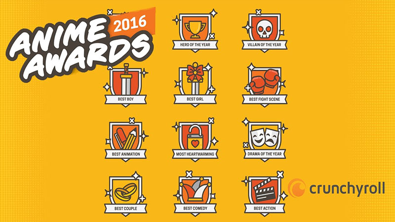

Awards and Nomination

Crunchyroll Anime Awards
The Crunchyroll Anime Awards is an annual awards ceremony started in 2017 to celebrate and honor the best anime across the industry. In the inaugural anime year of 2016, online voters chose from 14 categories over 5 week period. At the 2016 Anime Awards, My Hero Academia Season 1 was nominated in 7 categories, but only won 1 of them. The 2017 anime year had 16 categories (excluding the Best Manga category). At the 2017 Anime Awards, My Hero Academia Season 2 was nominated in 8 categories, 7 of which were won.
| Nominee | Award | Result | |
|---|---|---|---|
| 1 | Deku vs. Kacchan | Best Fight Scene | Nominated |
| 2 | My Hero Academia Season 1 | Best Action | Nominated |
| 3 | Tomura Shigaraki | Villian of the Year | Nominated |
| 4 | Deku | Hero of the Year | Won |
| 5 | Izuki Midoriya | Best Boy | Nominated |
| 6 | Ochaco Uraraka | Best Girl | Nominated |
| 7 | My Hero Academia Season 1 | Anime of the Year | Nominated |
| Nominee | Award | Result | |
|---|---|---|---|
| 1 | My Hero Academia Season 2 | Best Animation | Won |
| 2 | Peace Sign (ピースサイン Pīsu Sain) | Best Opening | Won |
| 3 | My Hero Academia Season 2 | Best Action | Won |
| 4 | Stain | Best Villian | Won |
| 5 | Deku | Best Hero | Won |
| 6 | Izuki Midoriya","Shoto Todoroki" | Best Boy | Won |
| 7 | "Ochaco Uraraka","Tsuyu Asui" | Best Girl | Won |
| 8 | My Hero Academia Season 2 | Anime of the Year | Nominated |